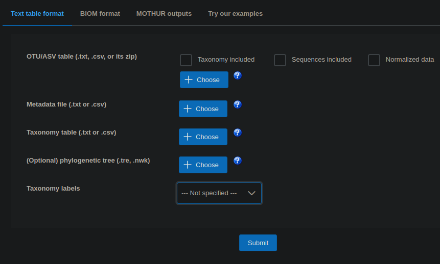

Microbiome Analysis of Amplicon Sequencing
July 28, 2025
This workshop will provide an overview of microbiome data analysis from Illumina amplicon sequencing raw data to data processing, visualization and statistics. Participants will learn basic concepts and tools to preprocess (QIIME2) and analyse (MicrobiomeAnalyst) microbiome data, in particular bacteria associated with marine organisms.
In a coral associated microbiome dataset, where we have two different coral species (with one incipient speciation) and two different reproductive strategies, we want to address the following scientific questions:
- Is the microbiome of these cold-water corals species-specific?
- Is the microbiome related to the reproductive strategy?
- Or is the microbiome shaped by both factors?
Setup
This tutorial requires you to be able to run QIIME2. We provide you with access to redi server, where it is preinstalled. However if you want to set it up yourself, the full instructions areavailable at qiime2 webpage. Beware that below is UNIX specific setup. We did these parts:
Install miniconda
- Download installer from anaconda
- Your downloaded file is executable (
.exeon Win,.pkgon Mac and.shon Linux). Run the install
Update conda and install QIIME2
# update your conda
conda update conda
# create conda environment for amplicon qiime2
conda env create -n qiime2-amplicon-2024.10 --file https://data.qiime2.org/distro/amplicon/qiime2-amplicon-2024.10-py310-linux-conda.ymlInput files
In the repository, you can find almost all the necessary input files, including pdf version of Tania’s introductory presentation.
Download the files to your local mahcine one by one from Github. Or better, setup yourself a Gihub account and you can clone the whole biohap repository.
Getting files to the server
To get the data tables from the server to your PC or opposite, ssh protocol exists.
- Linux: should be part of the core installation
- Putty on Windows, or ssh client
- Mac: part of the install
Once you have ssh setup, do ssh <USERNAME>@10.36.5.158, and then enter your password. You are the username connecting(@) to the server (10.36.5.158, redi).
If you are not at the University internet (eduroam or fixed), first you will need to connect to it via UAlg VPN service.
In your /home/<USERNAME> directory (you can see the location using pwd command), create a new folder
mkdir workshop_qiime2
# and navigate to it
cd workshop_qiime2To copy the files to the server, instead of standard cp we need to use secure scp. Note that the server address is most probbably different but the structure of the command is <USERNAME>@<SERVER IP address>:<ABSOLUTE-PATH>
# scp from to, -r means with the subfolder structure (recursive)
scp -r "<path-to-your-downloads-perhaps>\Samples" <USERNAME>@10.36.5.158:/home/<USERNAME>/workshop_qiime2/Note different slashes used on different operating systems. On windows, the path will be something like “C:”, macOS similar to “/Users/USERNAME/Downloads/”, unix “/home/USERNAME/Downloads”
Transfer the other files in the similar manner.
Every time you are lost on the server, use pwd to print current directory you are in, ls to list contents of the directory and cd to navigate to other directories (going up the tree one level with cd ..)
File preparations
First look at your manifest file, which specifies sample ids, and reads filenames, in this case we use paired ends, which means two file_paths per line are present.
cat Manifest_file_Species.txtThe path needs to be changed to conform with your file system location. You see weird ^M characters, let’s remove those
- Either use
dos2unix Manifest_file_Species.txt - Or replace them using
sed
# \r/ refers to Windows line ending
sed -i 's/\r//g' Manifest_file_Species.txtRun cat command again to confirm successful substitution. Select part of the path you want to replace next.
- Select with the cursor the path (this automatically enters into your clipboard), or right mouse click and select copy
- probably something like
/Users/microbiomes/Documents/Microbiomes/Coral_Microbiome_Workshop_sps_comparison/
Now we substitute the string with correct path
- Middle mouse button click pastes your mouse selection, ie clipboard on the command line
- Alternatively also right click and select
paste. - You can get your correct path using
pwdto print current folder path (assuming you are where yourSamplesfolder is)
sed -i 's|/Users/microbiomes/Documents/Microbiomes/Coral_Microbiome_Workshop_sps_comparison/|<YOUR_PATH_TO_FOLDER_Samples>|g' Manifest_file_Species.txtNote that since our strings contained / character we used | to separate the parts of the sed command. That was not necessary in the case above s/\r//g where / plays a role of the separator
sed command s: substitute our flag g means replace all occurance on the line.
s/pattern/subtitution/flags
Confirm again using cat that your manifest file is correct.
QIIME2
QIIME2 is installed in a sort of container (conda environment), which allows you to work on different project which need different dependencies in parallel. First, activate the correct conda environment, which has QIIME2 installed.
conda activate qiime2-amplicon-2024.10Your command line should look similar to (qiime2-amplicon-2024.10) [XXXX@redi ~]$ now. Make sure that you are in your workshop_qiime2 directory where you have also copied the files which serve as inputs for the below section (flags -i, --input-path or similar)
Import data
qiime tools import \
--type 'SampleData[PairedEndSequencesWithQuality]' \
--input-path Manifest_file_Species.txt \
--output-path demux.qza \
--input-format PairedEndFastqManifestPhred33V2type describes that we have paired ends with Q scores (fastq) inputs. input-path is our manifest file, describing where all the files are. demux.qza will be our output-path file and input-format describes your sequencing technology, PairedEndFastq means that your data was sequenced with Forward and Reverse primers and you have two fastq files per sample that should be joined. Phred33 refers to the type of Phred scores in your fastq file. This is the lastest version and used for most recent Illumina sequencers. V2 is the version of the manifest file formatting we conform to.
Create visualization file for demultiplexed data
qiime demux summarize --i-data demux.qza --o-visualization demux.qzv--i-data: input, which is output of importing data previously--o-visualization: output filename
Visualize .qzv files
Every time you create .qzv table, it is to be visualized at QIIME2 webpage for quality control and taking decisions for next steps. Open QIIME2 webpage and drag the qzv files in there. Use the ssh as described above to get the data to your PC.
This is easiest to do from your local machine side, for which you need to open additional powershell for Windows or terminal for mac users (NOT logged in to the server).
scp <USERNAME>@10.36.5.158:/home/<USERNAME>/workshop_qiime2/demux.qzv "absolute-path-on-your-PC-to-folder-you-want-your-file"Go to QIIME2 and drag any .qzv file to visualize it.
Denoise with DADA2
dada2 is an R package, which will be used here. This step can take substantial time and resource.
qiime dada2 denoise-paired \
--i-demultiplexed-seqs demux.qza \
--p-trim-left-f x \
--p-trim-left-r y \
--p-trunc-len-f z \
--p-trunc-len-r n \
--p-n-threads 0 \
--o-table table.qza \
--o-representative-sequences rep-seqs.qza \
--o-denoising-stats denoising-stats.qza \
--verboseNote: When choosing where to trim the sequences, after looking at the demux file, besides taking into account that low quality nucleotides should be removed, we need to make sure that the forward (R1) and reverse (R2) sequences, after trimming, can still overlap. A good overlap may be between 20 and 100bp.
Let’s say:
- Your amplicon is 450 bp
- Your reads are 250 bp each (paired-end)
If both reads are high-quality all the way: 250 (R1) + 250 (R2) = 500 bp, with expected overlap: ~50 bp, 🍏 But if you truncate reads too aggressively (e.g., with –p-trunc-len-f 200 –p-trunc-len-r 180), R1 becomes 200 bp, R2 becomes 180 bp. Then:
200 + 180 = 380 < 450 The sequences won’t be able to overlap,🍎
If, for example, all your reverse reads are very low quality (usually the quality of R2 reads are lower than R1) the analysis can be done using only R1 sequences as single-end sequences. But first, complain to your sequencing centre.
--p-trim-left-f: xxx (see demux.qzv file)--p-trim-left-r: xxx (see demux.qzv file)--p-trunc-len-f: xxx (see demux.qzv file)--p-trunc-len-r: xxx (see demux.qzv file)--p-n-threads 0: xxx (the number of CPUs threads the tool should use during processing, zero means “use all the threads available”)--o-table: output table filename--o-representative-sequences: representative sequences file name--o-denoising-stats: statistics filename specification--verbose: write extensive progress on the screen (since this script does several things it is advisable to run it so we can follow the flow)
R version 4.3.3 (2024-02-29) Loading required package: Rcpp DADA2: 1.30.0 / Rcpp: 1.0.13.1 / RcppParallel: 5.1.9 2) Filtering …………………… 3) Learning Error Rates 208608800 total bases in 1043044 reads from 17 samples will be used for learning the error rates. 219039240 total bases in 1043044 reads from 17 samples will be used for learning the error rates. 3) Denoise samples …………………… …………………… 5) Remove chimeras (method = consensus) 6) Report read numbers through the pipeline 7) Write output Saved FeatureTable[Frequency] to: table.qza Saved FeatureData[Sequence] to: rep-seqs.qza Saved SampleData[DADA2Stats] to: denoising-stats.qza
DADA2 output visualization
Create .qzv files for visualizations again.
qiime metadata tabulate \
--m-input-file denoising-stats.qza \
--o-visualization denoising-stats.qzvArguments specify input and output files.
qiime feature-table summarize \
--i-table table.qza \
--o-visualization table.qzvAnd finally tabulate the sequences.
qiime feature-table tabulate-seqs \
--i-data rep-seqs.qza \
--o-visualization rep-seqs.qzvUse your scp skills again to transfer denoising-stats.qzv, rep-seqs.qzv and table.qzv to your PC. Again, do it from your PC’s command line.
scp <USERNAME>@10.36.5.158:/home/<USERNAME>/workshop_qiime2/*.qzv "path-to-destination-folder"Taxonomy assignment using Silva database
The database is now in the repo because of its size, download it. If you work on redi, the database is located at <fill in path DP>. This is also a time-consuming step
The classifier needs to match our scikit-learn package version used by the QIIME2 version. At redi, the version is 1.4.2, and we have already put in the shared location path /opt/shared/silva-138-99-nb-classifier.qza.
In other use case, download the appropriate classfier from qiime. If you use your own classifier, the below specifications of the classifier might change.
qiime feature-classifier classify-sklearn \
--i-classifier /opt/shared/silva-138-99-nb-classifier.qza \
--i-reads rep-seqs.qza \
--o-classification taxonomy.qzaCreate output for visualization
qiime metadata tabulate \
--m-input-file taxonomy.qza \
--o-visualization taxonomy.qzvExport feature table (BIOM format)
qiime tools export \
--input-path table.qza \
--output-path feature-tableNote: We first create a biom table from the .qza file so we can then integrate the taxonomic assignments. Biom tables can also be used in other programs for downstream analysis if you want.
Export taxonomy table
qiime tools export \
--input-path taxonomy.qza \
--output-path taxonomyTo move further with the analysis, open the taxonomy file and change the header. When you open it, you’ll see the header looks like this:
Feature ID Taxon Confidence
You need to change it to this:
#otu-id taxonomy Confidence
ALL spaces are tabs
Can you figure out the sed command do do that?
sed -i '1s/.*/#otu-id\ttaxonomy\tConfidence/' ~/the_name_of_the_folder_where_you_are_working/taxonomy/taxonomy.tsvConfirm if the header has changed
head taxonomy/taxonomy.tsvCombine the feature table with the taxonomy table
biom add-metadata \
--input-fp feature-table/feature-table.biom \
--observation-metadata-fp taxonomy/taxonomy.tsv \
--output-fp biom-with-taxonomy.biomConvert .biom table to .txt table
biom convert \
--input-fp biom-with-taxonomy.biom \
--output-fp ASV_table.tsv \
--to-tsv --header-key taxonomyThe output of these scripts will be two different files, a ASV_table_MA.txt file and a taxonomy_MA.txt file that are ready to upload in the MicrobiomeAnalyst program.
MicrobiomeAnalyst (MA)
Unfortunately the ASV table is not directly compatible with the MA. We need to split it into separate abundance and taxonomy tables. In the GH repo, there are two scripts to do that without going into the details. Both have hardcoded input ASV table name ASV_table.tsv which you need to conform too. Outputs will be ASV_table_MA.txt and taxonomy_MA.txt, respectively.
Running the shell script requires that executable (x) permissions for the file, which probably after scp is not the case. To enable execution, run:
chmod +x convert_ASV_abundances.sh
chmod +x convert_ASV_taxonomy.shwith ls, the executable files should appear in green. The scripts accept one and one argument only which points to the ASV_table.tsv generated by QIIME2. Below it assumes your in the directory where the ASV table resides, otherwise include absolute or relative path.
./convert_ASV_abundances.sh ASV_table.tsv
./convert_ASV_taxonomy.sh ASV_table.tsvTogether with the provided metadata_MA.txt, which assigns each sample to a coral species, those are the three files you need to scp to your local machine for MA web interface upload. MA can do too many things for you, the subset we will use is described in Tania’s presentation available on GH too.
It is very important that the metadata file columns are tab separated, and the first column header is #NAME.
The fun starts Microbiome analyst page, Click here to start the session and select Marker data profiling.

You need to select the first three input files (OTU/ASV table, Metadata file, Taxonomy table), and from the dropdown, choose Taxonomy labels to be QIIME.